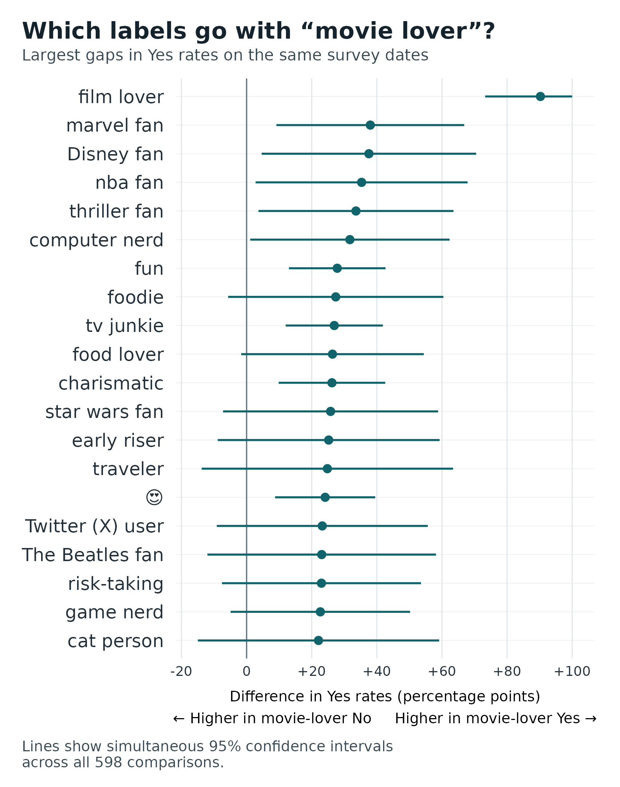

A daily study of the self
What goes with calling yourself a movie lover?

The clearest clue that someone called themselves a movie lover in Ipseity Daily was that they also called themselves a film lover. After balancing the survey dates, 94.0% of the movie-lover Yes group said Yes to “film lover,” compared with 3.8% of the No group. The overlap makes sense for near synonyms. Seeing both phrases in the same survey may also have encouraged people to answer consistently.
“Marvel fan” and “Disney fan” had the next largest gaps. Both are ways to name a fandom. “Thriller fan” describes a taste that can span many franchises, and “tv junkie” points to a viewing habit that can extend beyond movies. Even among those who said Yes to “movie lover,” the date-weighted Yes rate for “marvel fan” was 46.0%. The broad identity leaves plenty of room for different tastes.
NBA fandom also stood out. Movies and sports both give people ongoing stories to follow and something to talk about with other fans. That may be one reason these interests show up together as self-descriptions. “Computer nerd” had a large gap as well, with a wide interval. Technology, sports and screen entertainment may all form part of some respondents’ leisure lives, and each label captures a different piece of how they describe themselves.
The 20 largest gaps
The list gives the estimated differences in Yes rates, in percentage points. A plus sign means the signifier was more common in the movie-lover Yes group. The ranking uses the size of the gap in either direction. All 20 estimates favor Yes.
- film lover (+90.3)
- marvel fan (+38.0)
- Disney fan (+37.6)
- nba fan (+35.3)
- thriller fan (+33.6)
- computer nerd (+31.7)
- fun (+27.8)
- foodie (+27.4)
- tv junkie (+26.9)
- food lover (+26.4)
- charismatic (+26.2)
- star wars fan (+25.8)
- early riser (+25.2)
- traveler (+24.8)
- 😍 (heart-eyes emoji, +24.1)
- Twitter (X) user (+23.2)
- The Beatles fan (+23.1)
- risk-taking (+23.0)
- game nerd (+22.7)
- cat person (+22.1)
In the figure, each dot marks a gap and the line through it shows its uncertainty. The 95% confidence intervals account for the full search across signifiers. Ten of the displayed intervals stay above zero and ten cross it. “Star wars fan” fits the entertainment pattern, for example, and its interval leaves room for little or no gap. “Early riser” and “cat person” also rank high by their estimates, with intervals broad enough that their places on the list could reflect sampling variation. Many neighboring estimates are close enough that their order is best read as descriptive.
The “tv junkie” comparison drew on 736 distinct respondents, and “marvel fan” drew on 123. The television label has a smaller estimated gap and a much narrower interval. For some respondents, following a series and sitting down for a film may be closely related ways to spend time.
“Fun,” “charismatic,” and 😍 each had an interval above zero. These answers may say something about how people present themselves. A heart-eyes face can express enthusiasm or affection, and the meaning is open to each respondent. More broadly, 452 of the 598 signifiers screened had a positive estimated gap. A willingness to say Yes to many kinds of self-description could contribute to that pattern. So could genuine overlap in people’s interests. The answers leave room for both explanations.
Who was compared
Ipseity Daily asks whether a word, phrase or symbol describes someone today. The snapshot held 801,166 answers through November 24, 2026. “Movie lover” was answered on 10,110 respondent-days by 5,453 people. The full screen used 493,875 answers to other signifiers from 10,069 respondent-days and 5,436 people. A respondent-day is one person’s survey on one date.
Each comparison used surveys where both questions were answered that day, on dates with answers from both movie-lover groups. A signifier had to have at least 50 such surveys and 20 distinct respondents in each group. Dates with more answers and a better balance between the groups counted more. The uncertainty calculation allowed answers from a returning respondent to be related across dates.
The survey assigns labels in sets, so comparisons can draw on different people and dates. Surveys with missing demographics still contribute their valid answers. Age, other demographics, and the order of questions could all shape who chooses which labels. The patterns describe the surveyed adults. Estimating the same gaps for all U.S. adults would require a representative sample.
A respondent who answered No might enjoy a good film and feel that “lover” was too strong a word. Someone who answered Yes might watch only a few kinds of movies and care deeply about them. The gaps describe what other labels people reach for when they decide whether “movie lover” fits.
Read the complete R analysis
#!/usr/bin/env Rscript
Sys.setenv(TZ = "UTC")
suppressPackageStartupMessages({
library(tidyverse)
library(scales)
library(ragg)
})
target_signifier <- "movie lover"
min_paired_days <- 50L
min_respondents <- 20L
report_count <- 20L
confidence_level <- 0.95
day_key <- c("hashed_respondent_id", "observation_date")
demographic_fields <- c(
"age", "sex", "ethnicity", "birth_country", "residence_country",
"nationality", "language", "student", "employment"
)
expected_fields <- c(
"endorsed", "signifier", "observation_date", "hashed_respondent_id",
"demographics_status", demographic_fields, "time_on_task", "approvals"
)
responses <- read_csv(
Sys.getenv("IPSEITY_DATA_PATH", "data/ipseity.csv.gz"),
col_types = cols(
.default = col_character(),
endorsed = col_integer(),
observation_date = col_date(format = "%Y-%m-%d")
),
show_col_types = FALSE
)
if (
!identical(names(responses), expected_fields) ||
nrow(problems(responses)) > 0L ||
anyNA(responses[c("endorsed", "signifier", day_key)]) ||
any(!responses$endorsed %in% c(0L, 1L)) ||
any(!str_detect(responses$hashed_respondent_id, "^[0-9a-fA-F]{12}$")) ||
any(!responses$demographics_status %in% c(
"available", "consent_revoked", "data_expired"
)) ||
anyDuplicated(responses[c(day_key, "signifier")]) > 0L ||
any(!is.na(responses[
responses$demographics_status == "consent_revoked", demographic_fields
]))
) {
stop("The supplied data do not follow the documented canonical schema.")
}
movie_responses <- responses |>
filter(signifier == target_signifier) |>
select(all_of(day_key), movie_lover = endorsed)
# A pair is two observed answers from the same survey. Each date retained
# for a signifier must have observed answers in both movie-lover groups.
paired <- responses |>
filter(signifier != target_signifier) |>
select(all_of(day_key), signifier, endorsed) |>
inner_join(movie_responses, by = day_key) |>
filter(n_distinct(movie_lover) == 2L, .by = c(signifier, observation_date))
eligible_signifiers <- paired |>
summarise(
paired_days = n(),
respondents = n_distinct(hashed_respondent_id),
.by = c(signifier, movie_lover)
) |>
filter(paired_days >= min_paired_days, respondents >= min_respondents) |>
count(signifier, name = "eligible_groups") |>
filter(eligible_groups == 2L)
eligible <- semi_join(paired, eligible_signifiers, by = "signifier")
screened_count <- nrow(eligible_signifiers)
if (screened_count < report_count) {
stop("Too few signifiers meet the overlap and sample-size requirements.")
}
date_rates <- eligible |>
summarise(
n_yes = sum(movie_lover),
n_no = n() - n_yes,
target_mean = mean(movie_lover),
answer_mean = mean(endorsed),
rate_yes = mean(endorsed[movie_lover == 1L]),
rate_no = mean(endorsed[movie_lover == 0L]),
.by = c(signifier, observation_date)
) |>
mutate(weight = n_yes * n_no / (n_yes + n_no))
# Weight both groups by the same date distribution. The weight favors dates
# with more observations and better balance between the two groups.
estimates <- date_rates |>
summarise(
dates = n(),
n_yes = sum(n_yes),
n_no = sum(n_no),
weight_sum = sum(weight),
rate_yes = weighted.mean(rate_yes, weight),
rate_no = weighted.mean(rate_no, weight),
.by = signifier
) |>
mutate(gap = rate_yes - rate_no)
# The weighted gap is the slope from a linear regression with date fixed
# effects. Use the date-centered regression scores for the clustered variance.
cluster_scores <- eligible |>
left_join(
select(date_rates, signifier, observation_date, target_mean, answer_mean),
by = c("signifier", "observation_date")
) |>
left_join(select(estimates, signifier, gap), by = "signifier") |>
mutate(
target_centered = movie_lover - target_mean,
residual = endorsed - answer_mean - gap * target_centered,
score = target_centered * residual
) |>
summarise(
cluster_score = sum(score),
answered_yes = any(movie_lover == 1L),
answered_no = any(movie_lover == 0L),
.by = c(signifier, hashed_respondent_id)
) |>
summarise(
score_squares = sum(cluster_score^2),
clusters = n(),
respondents_yes = sum(answered_yes),
respondents_no = sum(answered_no),
.by = signifier
)
# Bonferroni intervals cover the whole screen, including the displayed subset
# selected by the size of the estimated gap.
ranked <- estimates |>
left_join(cluster_scores, by = "signifier") |>
mutate(
n_pairs = n_yes + n_no,
small_sample_factor = (clusters / (clusters - 1)) *
((n_pairs - 1) / (n_pairs - dates - 1)),
standard_error = sqrt(small_sample_factor * score_squares) / weight_sum,
critical = qt(
1 - (1 - confidence_level) / (2 * screened_count),
df = clusters - 1
),
lower = pmax(-1, gap - critical * standard_error),
upper = pmin(1, gap + critical * standard_error)
) |>
arrange(desc(abs(gap)), signifier, .locale = "C") |>
mutate(rank = row_number())
top <- slice_head(ranked, n = report_count)
plot_data <- top |>
mutate(
label = factor(signifier, levels = rev(signifier)),
direction = if_else(gap > 0, "Movie lover Yes", "Movie lover No")
)
figure <- ggplot(plot_data, aes(x = gap * 100, y = label)) +
geom_vline(xintercept = 0, colour = "#687580", linewidth = 0.5) +
geom_segment(
aes(x = lower * 100, xend = upper * 100, yend = label, colour = direction),
linewidth = 0.8
) +
geom_point(aes(colour = direction), size = 2.9) +
scale_colour_manual(values = c(
"Movie lover Yes" = "#11646C", "Movie lover No" = "#963D19"
), guide = "none") +
scale_x_continuous(
breaks = breaks_width(20),
labels = label_number(accuracy = 1, style_positive = "plus"),
expand = expansion(mult = 0.06)
) +
scale_y_discrete(expand = expansion(add = 0.63)) +
labs(
title = "Which labels go with “movie lover”?",
subtitle = "Largest gaps in Yes rates on the same survey dates",
x = paste(
"Difference in Yes rates (percentage points)",
"← Higher in movie-lover No Higher in movie-lover Yes →",
sep = "\n"
),
y = NULL,
caption = sprintf(
"Lines show simultaneous %.0f%% confidence intervals\nacross all %d comparisons.",
100 * confidence_level, screened_count
)
) +
theme_minimal(base_size = 14, base_family = "sans") +
theme(
panel.grid.minor = element_blank(),
panel.grid.major.y = element_line(colour = "#EFF2F4", linewidth = 0.35),
panel.grid.major.x = element_line(colour = "#E2E7EB", linewidth = 0.45),
axis.text = element_text(colour = "#25313A"),
axis.title.x = element_text(size = 12, lineheight = 1.25, margin = margin(t = 10)),
axis.text.y = element_text(size = 15, margin = margin(r = 6)),
plot.title = element_text(
colour = "#14232C", size = 19, face = "bold", margin = margin(b = 5)
),
plot.subtitle = element_text(
colour = "#394A55", size = 13, margin = margin(b = 12)
),
plot.caption = element_text(
colour = "#394A55", size = 12, hjust = 0, margin = margin(t = 12)
),
plot.title.position = "plot",
plot.caption.position = "plot",
plot.margin = margin(18, 21, 14, 18)
)
ggsave(
"visualization.png", figure, device = agg_png,
width = 7.1, height = 9.0, units = "in", dpi = 240, bg = "white"
)
summary_lines <- c(
"Movie lover signifier comparison",
sprintf("Snapshot first observation date: %s", min(responses$observation_date)),
sprintf("Snapshot last observation date: %s", max(responses$observation_date)),
sprintf("Snapshot response observations: %d", nrow(responses)),
sprintf("Snapshot respondent-days: %d", nrow(distinct(responses, across(all_of(day_key))))),
sprintf("Snapshot unique respondents: %d", n_distinct(responses$hashed_respondent_id)),
sprintf("Snapshot observation dates: %d", n_distinct(responses$observation_date)),
sprintf("Snapshot signifiers: %d", n_distinct(responses$signifier)),
sprintf("Movie lover response observations and respondent-days: %d", nrow(movie_responses)),
sprintf("Movie lover unique respondents: %d", n_distinct(movie_responses$hashed_respondent_id)),
sprintf("Movie lover Yes respondent-days: %d", sum(movie_responses$movie_lover == 1L)),
sprintf("Movie lover No respondent-days: %d", sum(movie_responses$movie_lover == 0L)),
sprintf("Other response observations in eligible pairs: %d", nrow(eligible)),
sprintf("Respondent-days with any eligible pair: %d", nrow(distinct(eligible, across(all_of(day_key))))),
sprintf("Unique respondents with any eligible pair: %d", n_distinct(eligible$hashed_respondent_id)),
sprintf("Minimum paired respondent-days per movie-lover group: %d", min_paired_days),
sprintf("Minimum unique respondents per movie-lover group: %d", min_respondents),
sprintf("Signifiers screened: %d", screened_count),
sprintf("Screened positive gaps: %d", sum(ranked$gap > 0)),
sprintf("Screened negative gaps: %d", sum(ranked$gap < 0)),
sprintf("Screened zero gaps: %d", sum(ranked$gap == 0)),
sprintf("Signifiers reported: %d", nrow(top)),
sprintf("Simultaneous confidence level (%%): %.0f", confidence_level * 100),
sprintf("Reported positive gaps: %d", sum(top$gap > 0)),
sprintf("Reported negative gaps: %d", sum(top$gap < 0)),
sprintf("Reported positive intervals excluding zero: %d", sum(top$lower > 0)),
sprintf("Reported negative intervals excluding zero: %d", sum(top$upper < 0)),
sprintf("Reported intervals including zero: %d", sum(top$lower <= 0 & top$upper >= 0)),
"",
"Both rates use common date weights, proportional to n_yes * n_no / (n_yes + n_no).",
"Signifiers are ranked by the absolute unrounded gap. A positive gap means a higher rate in the movie-lover Yes group.",
"Intervals cluster by respondent and use a Bonferroni correction across the full screen.",
"The same respondent can contribute days to both groups.",
""
)
table_header <- paste(
"rank", "signifier", "yes_rate_pct", "no_rate_pct", "gap_pp", "lower_pp",
"upper_pp", "yes_days", "no_days", "yes_respondents", "no_respondents",
"unique_respondents", "dates",
sep = "\t"
)
table_lines <- with(top, sprintf(
"%d\t%s\t%.1f\t%.1f\t%+.1f\t%+.1f\t%+.1f\t%d\t%d\t%d\t%d\t%d\t%d",
rank, signifier, 100 * rate_yes, 100 * rate_no, 100 * gap, 100 * lower,
100 * upper, n_yes, n_no, respondents_yes, respondents_no, clusters, dates
))
writeLines(enc2utf8(c(summary_lines, table_header, table_lines)), "results.txt", useBytes = TRUE)
Original research prompt
Report the 20 signifiers that are most diagnostic of a movie lover Yes versus No endorsement. Discuss the potential meaning more than methodology.
Dataset SHA-256: c98354fcaff33836d3c1d2abcee2ff3017e5777c648e2b4f9f6bf2d93f921655